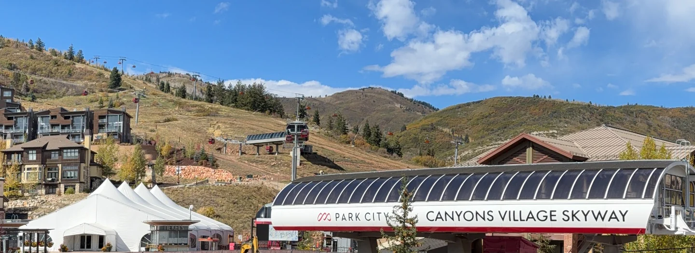

Park City spring break 2027 sits on an awkward calendar. Easter Sunday falls on 28 March, early enough to pull school holidays into the last full week of the month — the same week Utah's snowpack is normally at its deepest. A good trade, with one honest catch.

When is spring break in Park City in 2027?
There is no single answer, because districts set their own calendars. What they orbit is Easter, and Easter Sunday 2027 falls on 28 March — early, as these things go. That drags breaks back into March rather than April, which is why 21 to 28 March 2027 is the week to plan around.
That week sits well inside the season. Park City Mountain's own hours page gives winter 2026/27 as 20 November 2026 to 19 April 2027, weather dependent. You are not skiing the dregs of a season; you are skiing three weeks before it ends, every lift still turning. Our season calendar guide has the full window.
Why late March often holds the deepest snow
This is the part most spring break write-ups get backwards. They treat March as the tail end of winter, when by the measure that matters for coverage it is near the high point.
Utah's median snowpack peak date is around 3 April, against the 1991 to 2020 normals, at a median statewide peak near sixteen inches of snow water equivalent. In 2024, a near-normal year, it came on 2 April at 18.8 inches. In plain terms: the mountain normally carries as much snow in the last week of March as at any point all winter, and terrain that was thin in December is filled in.
Nor does the snowfall stop. Snow tracking data puts the monthly averages remarkably flat from December through March — January highest, March within a few inches of February. March storms are real storms, landing on a deeper base.
What a late March ski day feels like
Different from a February week, and the difference is timing more than quality. The driver is the melt and refreeze cycle: the surface softens in afternoon sun, then sets hard overnight. Park City's own spring guidance warns that some slopes can be icy first thing and soft by afternoon.
So you ski the clock. Start on east and south-facing slopes that catch early sun, then move round to north-facing runs as the day warms — the order the resort itself recommends. Get it wrong and you spend the morning on refrozen crust.
Two scheduling details help. Lifts run 9 am to 4 pm, and the clocks go forward on 14 March 2027, so this whole week is on daylight saving. Four o'clock no longer feels like dusk.
A few days of sun after a storm produce what the resort calls corn: a granular, forgiving surface, far kinder to tired legs than February hardpack. The March conditions guide covers how it forms and when to be on it.
Is spring break quieter than Presidents' Week?
In a normal year, clearly. Presidents' Week is the hardest week of the Park City year to book, for reasons set out in why Presidents' Week sells out first, and local lodging data shows rates easing as the spring shoulder arrives.
2027 deserves a caveat you will not find in most spring break content. An early Easter concentrates demand: breaks that might have spread across three or four April weeks pile into one. Local reporting from past early-break years recorded that effect on lodging numbers. Treat 21 to 28 March as busier than a typical late March, still short of mid-February.
| 13–20 February 2027 | 21–28 March 2027 | |
|---|---|---|
| Snow depth | Building, usually good | At or near the seasonal peak |
| Snow surface | Cold and consistent | Firm mornings, soft afternoons |
| Daylight | Dark soon after lifts close | Light evenings, clocks forward 14 March |
| Crowds | Peak week of the season | Above a usual March, below February |
| Main risk | Availability, booked far ahead | A warm or thin snow year |
One thing the table leaves out: 13 and 14 February 2027 are pass-holder blackout days at Canyons Village. Late March carries no such restriction, which simplifies a group on mixed pass types.
What is on in the village that week
More than you would guess, and it is free. The Canyons Village management association publishes a Spring Concert Series on the Forum Stage, every Saturday from 3 to 5 pm through March and April. The 2027 lineup lists Theoretical Blonde on 20 March and the Kris Lager Band on 27 March — the last Saturday of the week itself.
Apres at the Airstream runs most weekends by the Umbrella Bar, Friday and Sunday 2 to 5 pm, Saturday noon to 3 pm. All of it a short walk from the villa door — the quiet advantage of the village over town, and the photo gallery shows that walk.
The villa this guide is written from
We own a Premier Two-Bedroom Villa inside Westgate Park City Resort, in Canyons Village. It is 1,100 square feet, two kings and two queen sleeper sofas, sleeping eight in one unit. Full kitchen, a kitchenette in the lock-off studio, two bathrooms with walk-in showers, and a short walk to the Red Pine Gondola. For larger parties we have three such villas, up to 24 guests.
Unusually for these guides, this is a week we actually have: spring break, 21 to 28 March 2027, alongside Presidents' Week, 13 to 20 February 2027. Rented directly by the owners, so no agency sits between you and the answer.
What late March cannot promise
The median peak is a median, and 2026 was the warning: Utah's snowpack peaked on 9 March at 8.4 inches of snow water equivalent, a record low, about 52 per cent of normal and more than three weeks early. In a year like that, late March is thin and patchy.
Two smaller things. Snow safety teams open and close terrain as spring conditions dictate, so a given run may not be available on a given day. And the pond skim has historically fallen a week or two before the April close — 12 April in 2025, 13 April in 2024 — so it will most likely land after this week, not during it.
None of that argues against March. It argues for booking a week you would enjoy even in a mediocre snow year — which, with a kitchen, a village on the doorstep and light evenings, late March handles well. What a ski week costs for eight has the arithmetic, and ski school with kids covers lessons, easier to get in March than February.
Park City spring break 2027: common questions
When is Park City spring break in 2027?
No single date: districts set their own breaks. The anchor is Easter Sunday on 28 March 2027, which is early, so many calendars land on 21 to 28 March. Park City Mountain runs until 19 April 2027, so that week sits well inside the season.
Is there still good snow in Park City in late March?
Usually the most of it. Utah's median snowpack peak is around 3 April on the 1991 to 2020 normals, so the base is typically at its deepest in the last week of March. Quality changes more than quantity: melt and refreeze rather than midwinter powder.
Is March the snowiest month in Park City?
No. Snow tracking data puts January highest, with December, February and March close behind on a yearly average near 277 inches. The point is that March snowfall is not far off February's, and it lands on a base three months deeper.
When does Park City Mountain close in 2027?
The resort's own hours page gives winter 2026/27 as 20 November 2026 to 19 April 2027, weather dependent. Some aggregators list an earlier April date, apparently echoing a previous season's early finish. Use the resort's figure.
Is late March less crowded than Presidents' Week in Park City?
In a normal year yes, and local lodging data shows rates easing into the spring shoulder. 2027 is less clear cut: an early Easter on 28 March concentrates school breaks into one week. Expect it busier than a typical late March, still short of Presidents' Week.
What is on in Canyons Village during spring break 2027?
A free Spring Concert Series runs on the Forum Stage every Saturday from 3 to 5 pm, with the Kris Lager Band listed for 27 March 2027. Apres at the Airstream runs most weekends. The pond skim usually falls in April, after this week.
